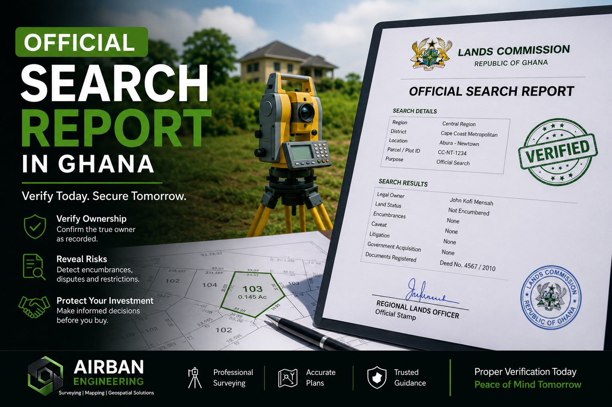

“A receipt alone does not guarantee safe land ownership.”
One of the biggest mistakes land buyers make in Ghana is purchasing land without conducting a proper official search.
Many people trust verbal assurances, allocation papers or family claims without independently verifying the legal status of the land. Unfortunately, that is how buyers end up facing:
- Multiple sales of the same land
- Boundary disputes
- Government acquisition problems
- Court litigation
- Hidden mortgages or encumbrances
A proper official search report helps reduce these risks significantly.
What Is an Official Search Report?
An official search report is a document issued by the Lands Commission after checks have been conducted on a parcel of land.
The report helps confirm important details about the land before purchase, registration or development.
It may reveal:
- The legal owner of the land
- Whether the land has already been registered
- Existing mortgages or encumbrances
- Government acquisition issues
- Court disputes or restrictions
- Conflicting ownership claims
Why Surveying Comes Before the Official Search
This is where many buyers make critical mistakes.
Some people attempt to conduct searches without first verifying the land physically or properly identifying the parcel boundaries.
However, an official search is only as accurate as the land information provided.
A professional survey helps:
- Confirm the exact parcel being investigated
- Verify coordinates and dimensions
- Prevent confusion with neighboring lands
- Prepare an accurate site or cadastral plan
- Support proper land documentation and registration
Step-by-Step Process for Obtaining an Official Search Report
Step 1 — Secure a Site Plan
Obtain a proper site or survey plan prepared by a professional land surveyor. The plan should clearly show:
- Coordinates
- Boundary dimensions
- Location details
- District and region
Step 2 — Visit the Lands Commission
Proceed to the relevant Lands Commission office where the land is located.
Step 3 — Submit Search Application
Fill out the official search request form and provide:
- Owner’s name (if known)
- Property location
- Parcel information
- Site plan
Step 4 — Pay Search Fees
Official search fees are paid through approved payment channels.
Step 5 — Internal Verification Process
Lands officers conduct checks within:
- Deed Registry
- Title Registry
- Vested Lands Registry
They also verify whether:
- Caveats exist
- Litigation is pending
- The land has restrictions
Step 6 — Issuance of Search Report
The final report is signed and stamped by the appropriate Lands Commission office.
Common Mistakes Land Buyers Make
- Buying land without proper surveying
- Trusting verbal assurances alone
- Ignoring official searches
- Relying only on receipts
- Skipping legal and professional guidance
Final Thoughts
An official search report is one of the most important steps in securing land safely in Ghana.
However, proper land verification should begin even earlier — with professional surveying and boundary confirmation.
A proper process today can save years of financial stress, litigation and uncertainty later.
Need Help Verifying Land Before Purchase?
Airban Engineering assists clients with:
- Boundary verification
- Cadastral surveys
- Site plans
- Official search preparation support
- Land documentation guidance
Related Articles:
- Step-by-Step Process to Secure Your Land in Ghana
- Why Most Land Disputes Start in Ghana
- Why You Must Survey Land Before Buying
Need professional land surveying services in Ghana? Visit our land surveying page here.